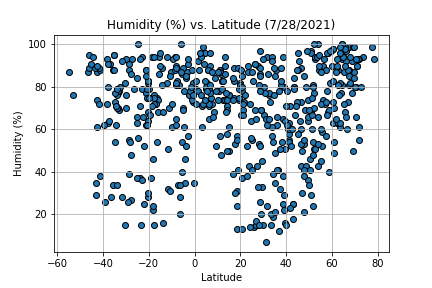

Humidity

In this humidity vs. latitude plot, there are clear low humidity ranges centered around lats 30 and -30. This is likely due to the Northern and Southern boundaries between the atmosphere's Hadley Cells and Mid-latitude cells, which are characterized by cool, dry, and high pressure air. Hadley and Mid-latitude cell boundaries occur on average at lats 30 and -30.